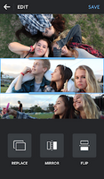

每周三组九宫格从半小时缩到五分钟，我是怎么把 Layout 嵌进内容生产流的
作为一个每周要产出三组对比图和场景拼图的测评博主，我把 Layout 插进了从选图到发稿的整条流水线，砍掉了两个小时手动操作。
旧流程的卡点
我做测评类内容，每周固定要出三组图：一组是产品参数对比四宫格，一组是同场景多机位九宫格，还有一组是日常花絮六宫格。以前这套流程是这样走的：
从手机相册里挑好四张或九张图，用数据线传到电脑，打开 Photoshop 建一个 2x2 或 3x3 的画布，把图片一张张拖进去，手动调整每格的裁剪位置，对齐边缘，导出 PNG，再用微信文件传输助手发回手机，打开小红书编辑器插图。
听起来每一步都不难，但叠在一起就很磨人：传图等十几秒，建画布记不住之前的尺寸要翻历史记录，拖图进去时每张都要手动裁掉多余部分，对齐边缘靠眼睛瞄不准还要拉参考线，最后发回手机又是一轮等待。三组图跑完，保守估计半小时，赶上图片多或者要调整构图的情况，一小时也正常。
更烦的是这条链路对网络环境有要求——地铁上想临时赶个图发朋友圈，没电脑就卡壳。试过几个手机端的拼图替代，要么有水印挡画面，要么强制登录才能导出，要么广告弹窗挡住编辑界面，没一个能顺顺当当走完流程。
把 Layout 插进流程的哪一环
Layout官网解决的就是中间那段"排版 + 裁剪 + 导出"。我把整条流程拆成四段：选图 → 排版裁剪 → 存稿 → 分发。Layout 完美卡进第二段，而且因为它本身完全离线、不登录、无水印，前后衔接几乎没有摩擦。
具体流程现在是这样：
第一段，选图：出门拍摄用手机原生相机，拍完直接在相册里标记好要拼的几张。这一步不变，因为相册的体验已经够好，换工具反而多一层操作。
第二段，排版裁剪：打开从 官方下载 来的 Layout，直接点开始，从相册里勾选刚才标记好的图。Layout 会自动给我出几个版式——2x2、3x3、L 型、T 型这些，点一下就能换。选好版式后进编辑界面，这里就是 Layout 的核心了：双指捏合缩放某一格的取景范围，单指拖动调整照片在格子里的位置，轻点格子可以替换、镜像或翻转，长按格子之间的分隔条还能调比例。这套手势我练了大概两三次就熟了，现在调一张图的取景位置基本就是两三秒的事。

第三段，存稿：右上角点保存，Layout 直接把拼好的图写进手机相册，没有任何确认弹窗，也不弹"要不要分享到 Instagram"的引导条。保存完我切回微信文件传输助手，把图拖到电脑上做后续的文案配图。这一步的衔接关键是 Layout 不生成独立文件也不强制打开分享面板——它就像相册自带的一个编辑功能，改完直接落盘，我想怎么处理这张图都可以。
第四段，分发：电脑端拿到图后，小红书、公众号、微博各发一份，版式和裁剪都已经在手机上调好了，这边只需要拖进去排位置。
容易断链的两个环节
流程跑了大概两个月，最容易出问题的地方有两个，我踩过坑之后总结了固定处理方式。
第一个断链点是"分隔条先调还是后调"。我最开始的习惯是先把每张照片的取景都调好，再去拉分隔条改格子比例。但分隔条一动，格子大小变了，之前对准的取景就偏了，得重新调一遍。解决方法很简单：先调分隔条定好格子大小，再去缩放取景。Layout 的分隔条拖动是实时预览的，拉的时候就能看到比例效果，定好之后每张格子的尺寸就固定了，这时候再去调单格取景，调完就是最终效果不会再变。这个顺序我现在已经形成肌肉记忆，不再翻了。
第二个断链点是"放大倍数的边界"。Layout 支持的缩放范围大概是 0.5x 到 3x，我有时候想把一张合影里的某个人放大填满一个格子，放到 2.8x 左右手机屏幕预览看起来还行，但导出到电脑上一看就糊了。成图被我放大到电脑屏幕那么大时，细节完全没法看。后来我给自己定了一条规则：缩放不超过 2x，超过的话宁愿换一张原图分辨率更高的照片拼，或者接受这个人在格子里小一点。翻了下 Layout文档，虽然没明确写画质阈值，但实测 2x 以内导出的图片质量和原图几乎没区别，2x 往上边缘就开始发虚。
还有一个小细节值得提一下：Layout 的所有编辑操作都不会改原图。镜像、翻转、双指缩放这些都是在 Layout 内部渲染出来的视觉效果，最终保存时合成进成图，但相册里的原始照片是什么样还是什么样。这意味着如果我对 Layout 拼出来的效果不满意，删掉成图重新选一张原图再拼就行，不会因为刚才试错而破坏素材库。这点在流程里很重要——我不用在 Layout 里反复撤回重做，大不了退出重开。
省了多少事，什么时候不划算
用了这套流程之后，三组图的制作时间从半小时缩到了五分钟左右。具体说：少了数据线传图那一轮等待（手机端直接存相册），少了 Photoshop 里手动裁每张图的操作（Layout 自动填满格子，我只需要对准重点），少了导出格式的纠结（Layout 直接出 JPG，不用选 PNG 还是 JPG、不用调压缩率）。
地铁上、等人的时候就能完成排版裁剪，回到家直接在电脑上做分发，整个过程不再被"有没有电脑"绑死。这是我最大的感受——以前做内容生产的瓶颈是"必须坐下来打开电脑"，现在瓶颈变成了"手机里有没有拍够图"。
当然这套流程也有不划算的时候。如果你只需要拼一张图、而且对版式没有特殊要求，Layout 不是最快的——系统相册自带的拼图功能可能更方便，毕竟少了打开另一个 App 的一步。另外，Layout 的版式是固定池里选的，不能自定义格子的数量和位置，如果需要一个完全定制化的异形版式（比如中间一个大图周围六个小图，或者不规则的多边形拼接），Layout 就做不到了，还是得回到 PS。
但对我这种"每周固定几组常规对比图、版式需求稳定"的场景，Layout 是把中间那段最磨人的重复劳动干掉了。选图、排版、存稿、分发四段里，只有第二段是纯粹的工具操作，而 Layout 把这段压缩到了极致——点开、选图、调手势、保存，四步，没有注册、没有广告、没有水印挡画面。
我自己的经验是：如果你发现自己每周都在做类似的拼图操作、而且流程里有一段"打开一个重型工具做很简单的事"，不妨看看能不能用一个专注的小工具替换掉那段。Layout 就是这样一个替代品——它不做任何额外的事，就做拼图这一件，而且做得足够干净、足够快。完全离线也能用，不想用了直接卸载不留痕迹。源码和打包脚本分别放在了 GitHub、Gitee 和 GitCode 上，国内访问的话 Gitee 和 GitCode 速度会更快一些。这样的工具嵌进工作流里，不会成为新的负担，反而让整条链更短更顺。